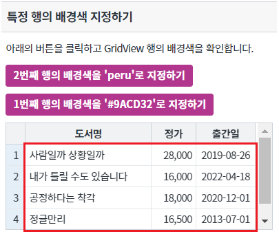
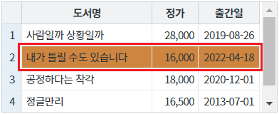
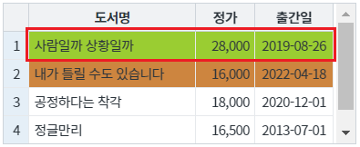
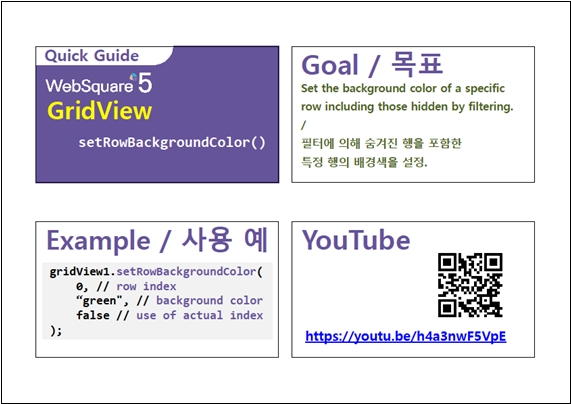

GridView의 특정 행의 배경색을 지정하는 예제입니다. 이 기능은 함수 setRowBackgroundColor를 호출하여 사용할 수 있습니다.
특정 행의 배경색 지정하기
영역 [특정 행의 배경색 지정하기]의 GridView를 확인합니다.
GridView의 기본 배경색이 지정되어 있지 않습니다.
[브라우저(Chrome) 실행 예시]

버튼 2번째 행의 배경색을 'peru'로 지정하기을 클릭합니다.
2번째 행의 행의 배경색이 'peru'로 변경됩니다.
[브라우저(Chrome) 실행 예시]

버튼 1번째 행의 배경색을 '#9ACD32'로 지정하기을 클릭합니다.
1번째 행의 배경색이 '#9ACD32'로 변경됩니다.
[브라우저(Chrome) 실행 예시]

GridView의 함수 setRowBackgroundColor을 사용합니다.
[소스 코드 예시]
//예제 파일의 스크립트 "scwin.btn_ex1_onclick" 또는 "scwin.btn_ex2_onclick"를 참고하세요. //GridView 'grd_exam1'의 2번째 행의 배경색을 'peru'로 지정하기 grd_exam1.setRowBackgroundColor(1, "peru"); //GridView 'grd_exam1'의 1번째 행의 배경색을 '#9ACD32'로 지정하기 grd_exam1.setRowBackgroundColor(0, "#9ACD32");
setRowBackgroundColor( rowIndex , color )
[웹스퀘어5 SP5 개발 가이드] GridView
링크 : https://docs1.inswave.com/sp5_user_guide/bc10c1b82c9a2a0b#e1c4658baf7e726f
[웹스퀘어5 SP5 개발 가이드] GridView 행 배경색 설정
링크 : https://docs1.inswave.com/sp5_user_guide/86bdcf48029b958b#9da58b4771f3b8f3
GridView 배경색 설정
링크 : https://youtu.be/h4a3nwF5VpE
